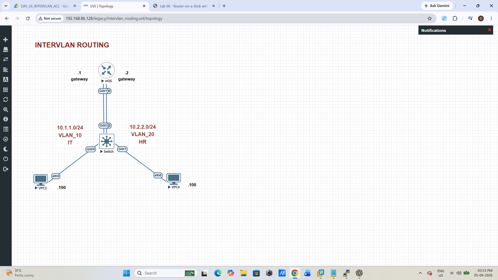
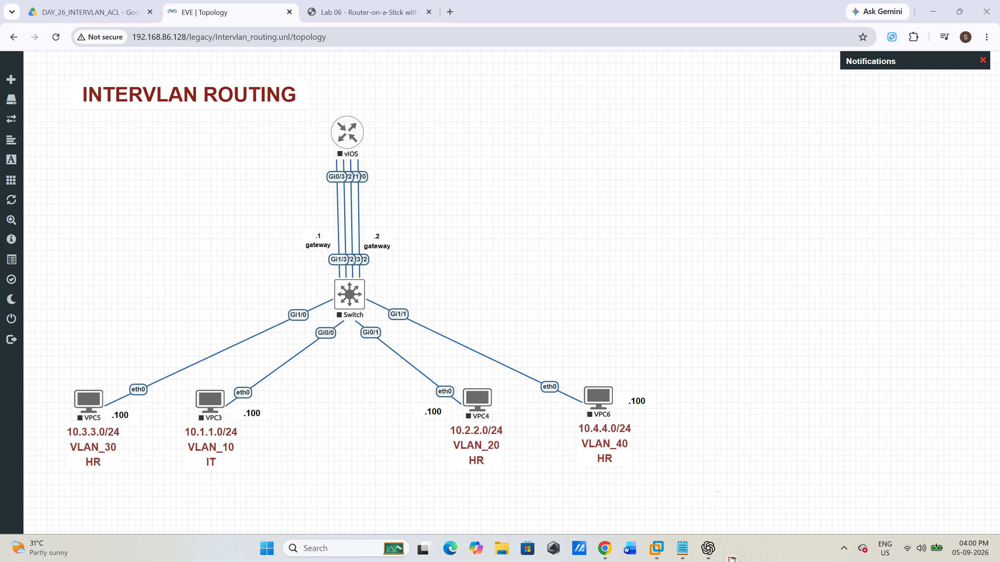

Lab 06 - Inter-VLAN Routing with Routed Interfaces
Objective
Create IT and HR VLANs on a Layer 2 switch, then route traffic between them with two dedicated router interfaces. Unlike router-on-a-stick, this design uses no switch trunk and no router subinterfaces: each VLAN has its own physical router link.
Topology

| Endpoint | Switch port / router port | VLAN and IP address |
|---|---|---|
| VPC3 (IT) | Switch Gi0/0 | VLAN 10 — 10.1.1.100/24, gateway 10.1.1.1 |
| IT router link | Switch Gi0/3 ↔ Router Gi0/1 | VLAN 10 — Router 10.1.1.1/24 |
| VPC4 (HR) | Switch Gi0/1 | VLAN 20 — 10.2.2.100/24, gateway 10.2.2.1 |
| HR router link | Switch Gi0/2 ↔ Router Gi0/0 | VLAN 20 — Router 10.2.2.1/24 |
Part 1 - Configure the switch
Paste from the Switch> prompt. Ports Gi0/0 and Gi0/3 belong to IT; Gi0/1 and Gi0/2 belong to HR.
enable configure terminal vlan 10 name IT vlan 20 name HR exit ! VPC3 - IT interface GigabitEthernet 0/0 switchport mode access switchport access vlan 10 no shutdown exit ! VPC4 - HR interface GigabitEthernet 0/1 switchport mode access switchport access vlan 20 no shutdown exit ! Router Gi0/0 - HR gateway link interface GigabitEthernet 0/2 switchport mode access switchport access vlan 20 no shutdown exit ! Router Gi0/1 - IT gateway link interface GigabitEthernet 0/3 switchport mode access switchport access vlan 10 no shutdown exit end copy running-config startup-config
Part 2 - Configure the router
Paste from the Router> prompt. The router automatically routes between its directly connected networks once both interfaces are addressed and enabled.
enable configure terminal ! IT / VLAN 10 gateway interface GigabitEthernet 0/1 ip address 10.1.1.1 255.255.255.0 no shutdown exit ! HR / VLAN 20 gateway interface GigabitEthernet 0/0 ip address 10.2.2.1 255.255.255.0 no shutdown exit end copy running-config startup-config
Part 3 - Configure the VPCS nodes
This lab uses static addressing, so run the matching command in each VPCS> console.
VPC3 — IT
ip 10.1.1.100/24 10.1.1.1 save
VPC4 — HR
ip 10.2.2.100/24 10.2.2.1 save
Part 4 - Verify connectivity
| Device | Command | Expected result |
|---|---|---|
| Switch | show vlan brief | Gi0/0 and Gi0/3 in VLAN 10; Gi0/1 and Gi0/2 in VLAN 20. |
| Router | show ip interface brief | Gi0/0 is 10.2.2.1 and Gi0/1 is 10.1.1.1; both show up/up. |
| Router | show ip route | Connected routes for 10.1.1.0/24 and 10.2.2.0/24. |
| VPC3 | show ipping 10.1.1.1ping 10.2.2.100 | Correct IT address and gateway; successful local-gateway then cross-VLAN replies. |
| VPC4 | ping 10.1.1.100 | Replies with TTL 63, showing one routed hop. |
Troubleshooting
- Gateway unreachable: confirm the VPCS port and its corresponding router-facing port are in the same VLAN.
- Router interface down/down: check the physical link and enable both ends with
no shutdown. - Cross-VLAN ping fails but gateway ping works: verify the other VPCS address and default gateway, then use
show ip routeto confirm both connected routes.
Additional activity - Four-VLAN extension

| VPCS | VLAN | Subnet | Planned host address |
|---|---|---|---|
| VPC3 | 10 — IT | 10.1.1.0/24 | 10.1.1.100 |
| VPC4 | 20 — HR | 10.2.2.0/24 | 10.2.2.100 |
| VPC5 | 30 — HR | 10.3.3.0/24 | 10.3.3.100 |
| VPC6 | 40 — HR | 10.4.4.0/24 | 10.4.4.100 |
When configured, this extension will use VLANs 10, 20, 30, and 40; one dedicated routed router interface per VLAN; static VPCS addressing; and cross-VLAN ping verification.
← All labs